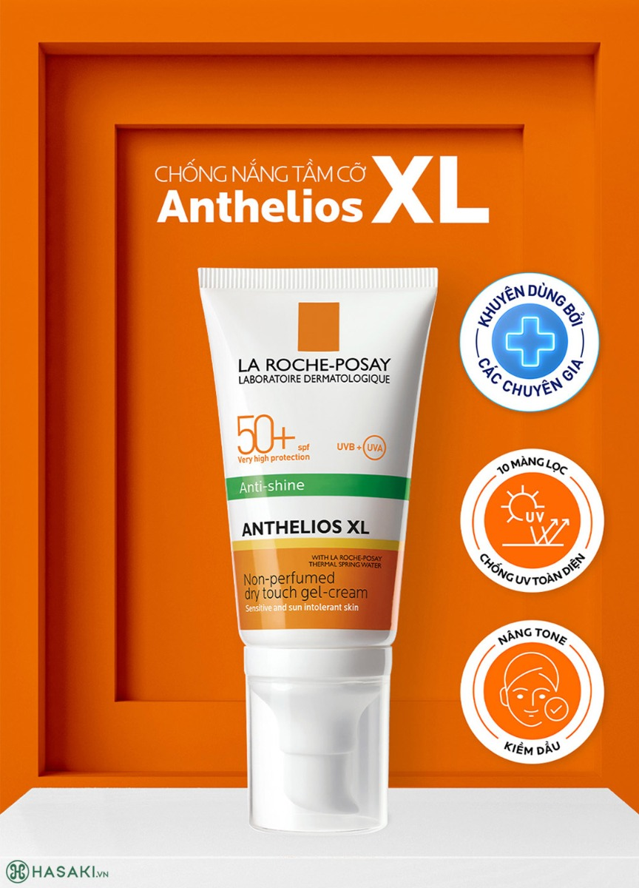
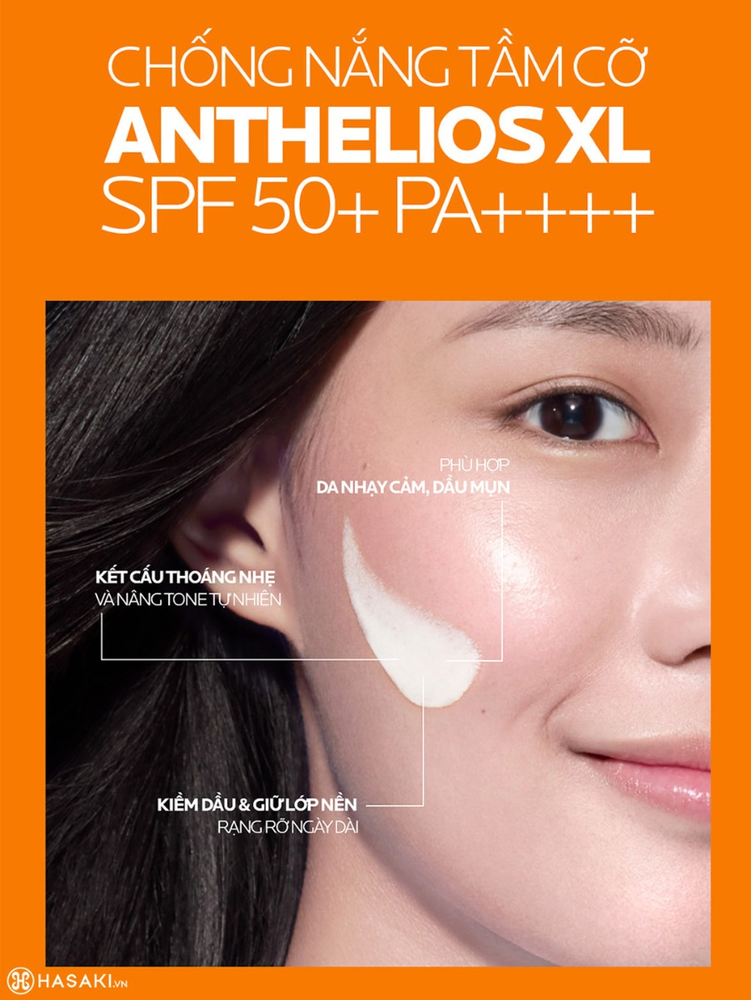

Kem Chống Nắng La Roche-Posay Phổ Rộng, Nâng Tông Kiềm Dầu 50ml
355.000 ₫ (Đã bao gồm VAT)
Giá thị trường: 590.000 ₫ - Tiết kiệm: 235.000 ₫ (40%)
Dung Tích: 50ml
Bạn muốn nhận hàng trước 16h hôm nay (Miễn phí). Đặt hàng trong 30 phút tới và chọn giao hàng 2H ở bước thanh toán.
Kem Chống Nắng La Roche-Posay Phổ Rộng Anthelios XL SPF 50+ PA++++ là giải pháp chống nắng da mặt tiên tiến từ thương hiệu La Roche-Posay, biểu tượng dược mỹ phẩm hàng đầu của Pháp. Với 10 màng lọc UV hiện đại, sản phẩm bảo vệ da toàn diện trước tia UVA/UVB – tác nhân gây thâm nám, lão hóa. Công thức chứa Airlicium mang lại khả năng kiềm dầu đến 12 giờ, tạo lớp finish nâng tông nhẹ nhàng, ráo mịn, không xỉn màu suốt ngày.
Kem Chống Nắng Phổ Rộng, Nâng Tông Kiềm Dầu La Roche-Posay Anthelios XL SPF 50+ PA++++ 50ml (phiên bản mới) chính hãng hiện đã có mặt tại Mỹ phẩm Online.
Hiện sản phẩm Tẩy Da Chết Toàn Thân BareSoul Glowy Body Peel chính hãng đã có tại Hasaki với 2 dung tích: 50g; 2x50g.

Kem Chống Nắng La Roche-Posay Phổ Rộng Anthelios XL SPF 50+ PA++++ phù hợp với loại da nào?
- Sản phẩm phù hợp cho da dầu, da hỗn hợp và da nhạy cảm.
- Lý tưởng để chống nắng cho da mặt và cổ.
Đối tượng sử dụng Kem Chống Nắng La Roche-Posay Phổ Rộng Anthelios XL SPF 50+ PA++++:
- Những người có da tiết nhiều dầu thừa, lỗ chân lông to, cần một loại kem chống nắng kiềm dầu hiệu quả cho sử dụng hằng ngày.
- Người muốn sở hữu kem chống nắng nâng tông nhẹ nhàng, mang lại làn da ráo mịn, tươi sáng tự nhiên.
- Da nhạy cảm, đặc biệt sau các liệu trình thẩm mỹ, cần sản phẩm dịu nhẹ, không gây kích ứng.
- Những ai có da xỉn màu, mong muốn cải thiện độ sáng và bảo vệ da khỏi tác hại của ánh nắng.
- Người thường xuyên trang điểm, sử dụng kem chống nắng như lớp lót hoàn hảo hoặc thay thế lớp trang điểm tự nhiên.

Hướng dẫn bảo quản Kem Chống Nắng La Roche-Posay Phổ Rộng Anthelios XL SPF 50+ PA++++:
- Bảo quản ở nơi khô ráo, thoáng mát, tránh ánh nắng trực tiếp.
- Đậy kín nắp sau mỗi lần sử dụng để ngăn sản phẩm bị oxy hóa hoặc nhiễm khuẩn.
- Tránh nơi có nhiệt độ cao (trên 30°C) hoặc độ ẩm lớn để duy trì chất lượng.
- Để xa tầm tay trẻ em.
Thông số sản phẩm
| Thương hiệu | La Roche-Posay |
| Xuất xứ thương hiệu | Pháp |
| Nơi sản xuất | France |
| Loại da | Da thường/Mọi loại da |
| Dung tích | 50ml |